風月堂のさくら餅つぶあん。
2025/03/18
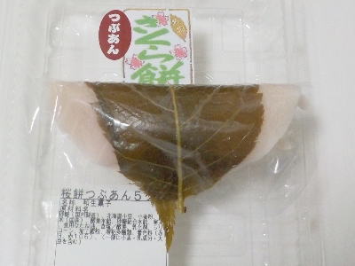
蓋を開けると桜餅の匂いが強くしました。今まであまり気にしたことなかったですが、こんなに匂いが強かったかな？他のお店の桜餅も同じ感じの匂いなのかな？
この桜餅は、薄いけどしっとりしててモチモチの衣が特徴的だと思いました。
島根県出雲市平田町485
2025/03/18

蓋を開けると桜餅の匂いが強くしました。今まであまり気にしたことなかったですが、こんなに匂いが強かったかな？他のお店の桜餅も同じ感じの匂いなのかな？
この桜餅は、薄いけどしっとりしててモチモチの衣が特徴的だと思いました。
2022/12/28
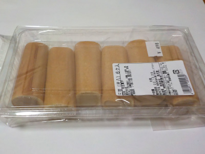
インターネットで三笠を検索すると「どら焼き」が多く出てきますが、この三笠は筒状です。全国的に珍しいタイプのものかもしれません。
中にしっとりしててなめらかな白あんが沢山入ってます。あんこがいっぱいで重たそうですが、後に残らないスッキリした甘さで美味しかったです。
2022/05/13
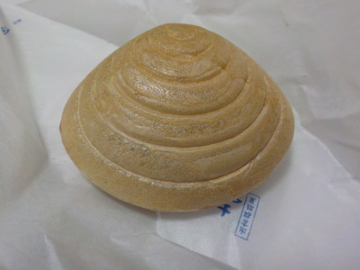
しっとりしてて柔らかい粒餡が入っているおかげか、とっても食べやすい。
最中の皮がサクサクじゃないといけないって餡子を食べる直前に挟むタイプもありますが、アレって最中の皮が唇くっ付いて嫌です。
唇に付かないように歯で噛めば、今度は粉がポロポロ落ちます。
食べ方に注意してるので、しっかりと味わえないです。
サクサクが好きな人もいると思いますが、私はこっちの方が好きです。
このしじみ最中ですが、甘さがしっかりありつつ小豆の味もあり、美味しかったです。
2019/03/02
しじみの恰好のしじみ最中です。
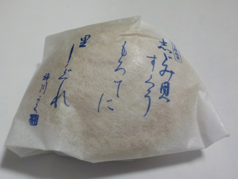
とっても甘かったです。
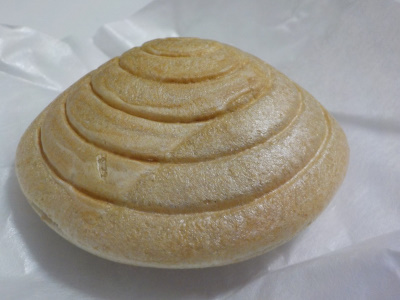
糖分補給にぱくっと食べるといいかも。
大きいのでシジミっぽくないですよね。はまぐりっぽい。
2018/08/26
豆腐ではないです。
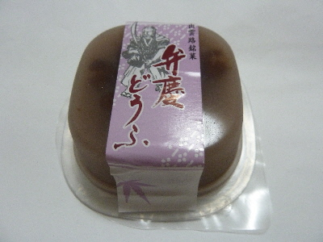
くず餅のような水羊羹のようなお菓子でした。
くず餅のようにふるんともしているし、水ようかんみたいになめらかな食感だったりします。
夏菓子にぴったりですね。
2017/11/30
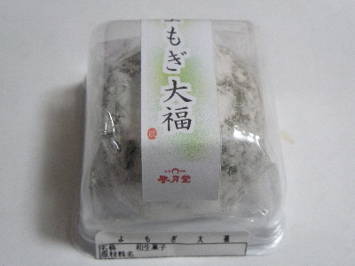
和菓子屋さんの大福なのでケース入りです。
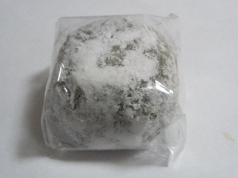
ケースの中はビニールで更に包装されてました。
大切にされてますね。
大福はヨモギ味もあんこ味も濃かったです。
とっても甘い大福でした。
2017/08/09
利休まんじゅうって出雲市にもあるんですね。
黒糖まんじゅうじゃないんだ。
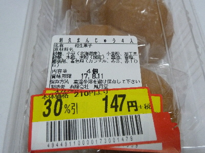
賞味期限は明後日ですが、30%OFFになっていました。
お買い得な感じがするので買ってしましました。
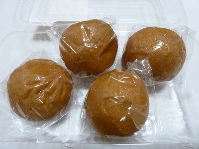
小さくて丸々したお饅頭4個入りです。
中に入っているコシアンが美味しかったです。
ちょっとホクホク感のあるコシアンっていいですね。
2017/02/24
和菓子屋さんのロールケーキです。
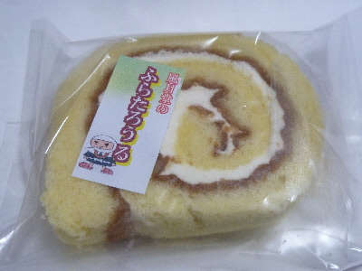
生クリームじゃないので、日持ちがいいですね。
今日買ったのは消費期限が3/5でした。1週間くらい持つのかな。
甘いんですが、すっきりしてて後味が残らない感じがしました。
コーヒー味や抹茶味もあったので、次はそっちも食べてみたいです。
2016/09/11
イオン出雲にいったら安売りしてました。
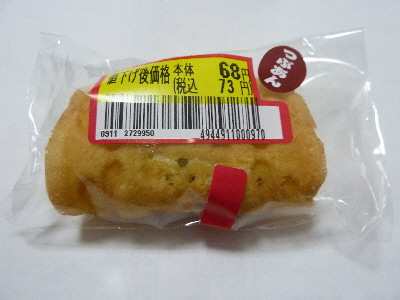
ちょっと小さいサイズの餡子入りワッフルです。
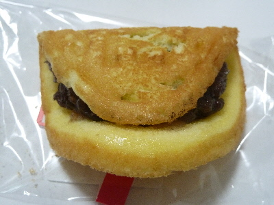
餡子の甘さが強いので、ほぼ和菓子だなーって思いました。
ドラ焼きのようですが、ドラ焼きとは違う味わいでした。
2013/09/04
柑橘系のちょっと変わった夏菓子です。
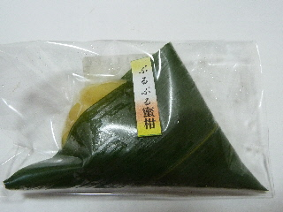
白あんがオレンジのゼリーに包まれています。
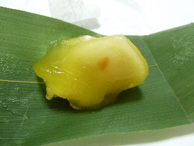
爽やかな柑橘系の甘さの中に、しっかり甘い白あんとオレンジピールが入っていました。
面白い商品ですね。
話のタネにいいかも。
2013/10/29
紙パッケージがちょっと目立ちますね。
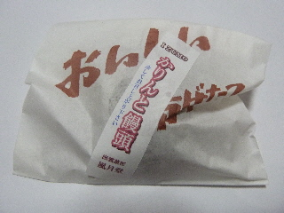
中からは、見た目普通の饅頭が出て来ました。
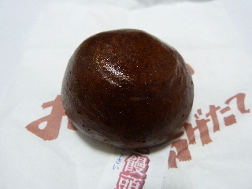
黒糖饅頭っぽいんですが、皮が固くなってて、ソフトかりんとになっていました。
変わってていいですね。
2013/05/04
欧州銘菓マドレーヌです。
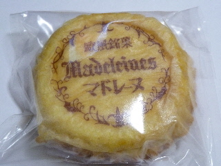
和菓子屋の風月堂さんのマドレーヌです。
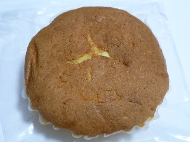
ひっくり返すとこんな感じです。
和菓子屋さんらしく油少なめで、柔らかくてあっさり味でした。
スポンジケーキっぽい感じですね。
2012/05/06
風月堂さんの柏餅のパックを買いました。
5個500円です。
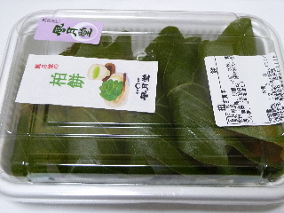
葉っぱを開いたら「おやき」が出てきました。
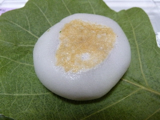
こうゆうタイプの柏餅もあるんですね。
初めて遭遇しました。
もっちもっちした食感の柏餅でした。
2010/8/3
風月堂の和三鮎
2010/7/11
風月堂のしじみ最中
2010/1/1
風月堂のはなびら餅
2009/2/1
風月堂の草餅
2008/8/10
風月堂のふるふると抹茶ふるふる
2007/12/23
風月堂のさくら餅
2006/7/1
風月堂のワッフル
2006/1/26
風月堂のみたらし団子
2005/8/8
風月堂のふるふる
2005/6/20
風月堂のみたらし団子